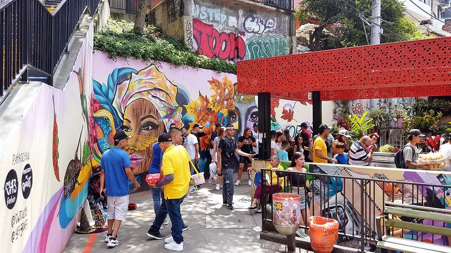

Medellín · Colombia
Comuna 13 is het meest indrukwekkende staaltje van Medellín's transformatie. In de jaren '90 was dit de gevaarlijkste wijk van de gevaarlijkste stad ter wereld — het territorium van gewapende bendes en drugsbaronnen. Vandaag is het een levendige culturele gemeenschap vol straatkunst, muziek en energie.
De transformatie begon met de installatie van buitenroltrappen (escalators) in 2011 — de eerste openbare buitenroltrappen ter wereld. Ze verbonden de hoge woonwijken met de stad, verminderde isolatie en gaf bewoners toegang tot werkgelegenheid. Lokale kunstenaars versierden de wijk met muurschilderingen die het verhaal van het conflict en de wederopbouw vertellen.

Comuna 13, Medellín
Fly into Medellín and base yourself in the city for the duration of your stay. Get versed on the recent history on a walking tour of the center before visiting the barrios of Comuna 13 and the Museo Casa de la Memoria.
Leave a day to ride the cable cars high above the valley and to check out the sculptures of the city’s prodigal son Fernando Botero.
Then take a day trip to Guatapé to climb the stone monolith and enjoy 360-degree views of the sprawling lake that embraces a maze of peninsulas and islands. Days to Travel Around
After finding your bearings in Medellín and visiting Guatapé, continue eastward to bathe in the crystal-clear waters of Río Claro, which flow through a jungle-clad limestone canyon.
Head south and then west over the Páramo de Letras to Manizales to check out its urban nature reserves and soak in the thermal baths.
After a day trip to the peaks of the Parque Nacional Natural Los Nevados, take the short trip south to Salento to spend your last couple of days learning about the coffee-growing process and hiking among the wax palms of the Valle de Cocora. to Explore
Begin in Medellín. Spend three or four days getting to know the city before taking day trips to Guatapé and Santa Fe de Antioquia to check out the classic architecture.
Next, pack your bags and head southwest to Jardín for an introduction to coffee country and some countryside walks. Visit the Cueva del Esplendor before taking the less-traveled unpaved road over the mountains via Río Sucio to Manizales.
End your trip with a multi-day trek through the Parque Nacional Natural Los Nevados to Salento via the stunning Laguna de Otún.
To see one of the innovative projects that have helped rejuvenate the city, pop over to Las Independencias I in Comuna 13, a formerly gang-ridden, violent neighbourhood clinging to a hillside on the western edge of town. As part of the area’s regeneration, the mayor’s office have installed six flights of escalators ( escaleras eléctricas ) up the hillside, along with children’s slides and fountains to play in on the streets, paint to brighten up the houses and youth clubs to keep local kids out of trouble. The result: a neighbourhood still poor, but with a better quality of life, less troubled and on the up. The escalators, installed in 2011, were among a number of projects called PUIs (Integrated Urban Projects), designed to improve life in the city, and uniformed staff, all local residents, will tell you with pride about the effect they have had. On the way back, it’s worth taking a detour to do a round trip on the cable car from San Javier station and to see how the cable car system has connected outlying areas to the city centre, cutting as much as an hour off journey times into town. It’s certainly notable how, in Medellín, regeneration means improving life for the poor rather than shifting them out to replace them with the rich. Laureles The Laureles neighbourhood, within walking distance west of the city, is increasingly popular as a place to stay and to eat. Served by the metro (line 2), it doesn’t have any tourist sights as such, but it’s home to the Atanasio Girardot sports complex, including the home ground for both of the city’s football teams. Arrival and departure Medellín By plane José María Córdova airport Medellín’s José María Córdova airport ( ) lies a hilly 28km from the city along a scenic highway; it services all international and most domestic flights. There are buses between the airport and Cra 50A No. 53–13 in the city centre (4 511 4023, ). Taxis are available from the airport into town; you may be able to share that as a taxi colectivo. From town, a good taxi firm with slightly lower prices is Acoa ( ).
• Doe een guided tour met een lokale gids — ze vertellen het volledige verhaal van de buurt en kennen de beste muurschilderingen
• Bekende kunstenaars: Chota, Yair Ojeda, Buenaventura — zoek hun namen op de muren
• 's Avonds NIET alleen gaan — de wijk is overdag veilig maar 's nachts nog steeds risicovol
• De roltrappen zijn gratis voor iedereen — wandel er gewoon op
• Combineer met El Poblado voor avondeten — veiligste wijk voor restaurants en bars